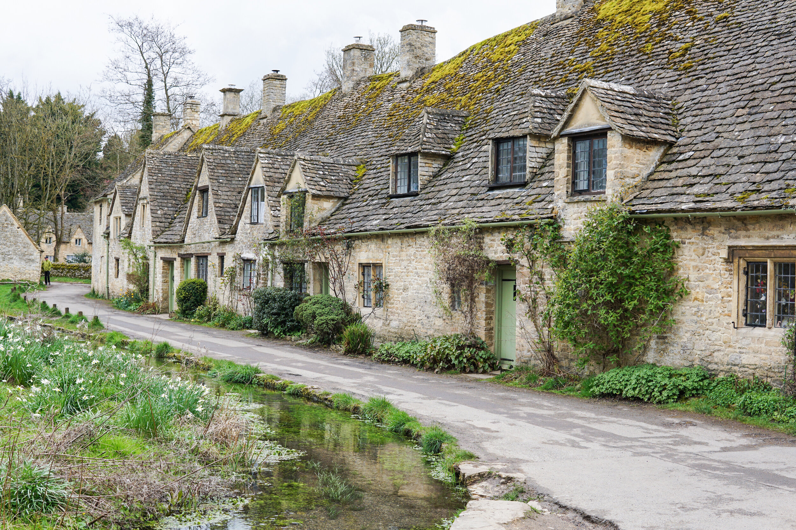
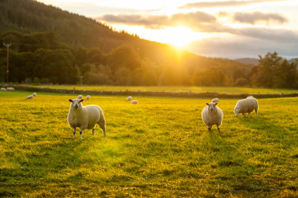

Why Scenery is Powerful
Scenery is powerful because it inspires creativity and wonder. Majestic mountains, tranquil forests, or stunning sunsets can spark ideas, fuel imagination, and connect us with the beauty of the world. These visual experiences often serve as a muse for art, literature, and innovation.
Image Examples




The Emotional Impact of Scenery
Beyond inspiration, scenery has a profound emotional and spiritual impact. It evokes awe, peace, and a sense of connection to something greater than ourselves. Whether standing before a vast ocean or marveling at a city skyline, we are often reminded of our place in the world and the grandeur of existence.
Examples of Inspiring Scenery
- Natural Wonders
- Urban Landmarks
- Sunsets and Sunrises
Scenery Brings Us to the Present
Lastly, scenery helps us feel more present and alive. Experiencing the natural or built environment can be grounding, healing, and rejuvenating. It encourages us to slow down, appreciate the moment, and find meaning in the beauty that surrounds us.
Explore Scenic Data Visualization